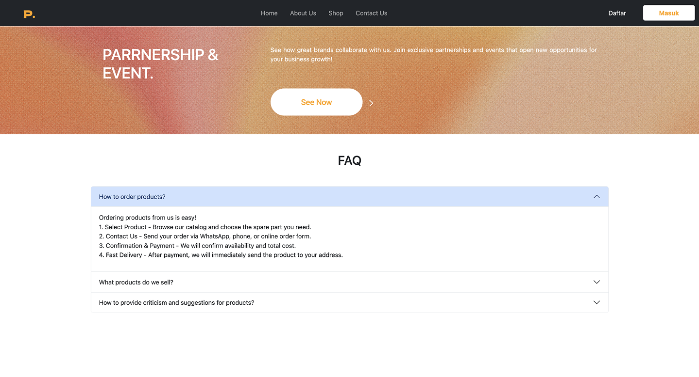
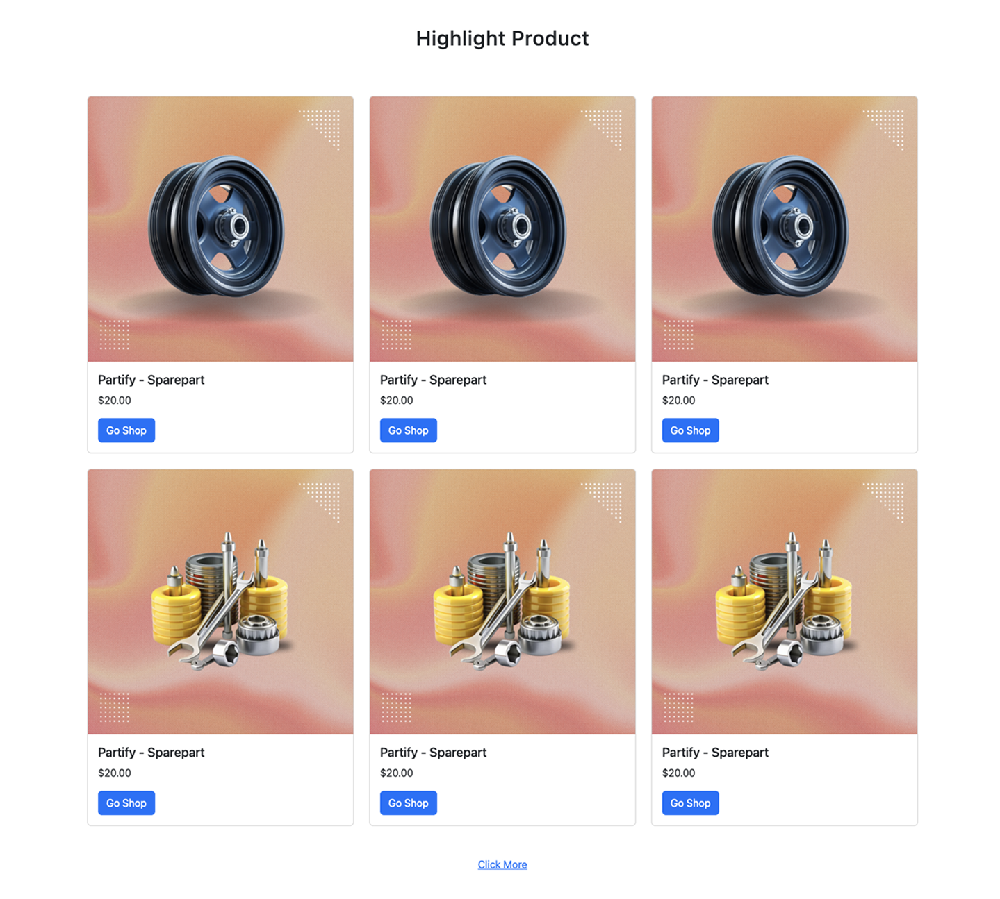

Partify - Platform E-Commerce dan Katalog Suku Cadang
Partify adalah sebuah platform e-commerce yang dirancang khusus untuk penjualan suku cadang (spare parts), kemungkinan besar untuk industri otomotif. Website ini berfungsi sebagai etalase digital yang modern dan bersih, memungkinkan pengguna untuk dengan mudah menelusuri produk, menemukan informasi, dan melakukan pemesanan. Dengan adanya sistem registrasi dan login, Partify tidak hanya bertindak sebagai katalog online, tetapi juga sebagai platform transaksi yang membangun hubungan dengan pelanggan, baik individu maupun bisnis (melalui program kemitraan/partnership).
Latar Belakang / Tujuan Proyek
-
Masalah yang ingin diselesaikan:
Pelanggan, baik pemilik kendaraan pribadi maupun bengkel, seringkali kesulitan mencari suku cadang yang spesifik dan terpercaya secara online. Proses pencarian yang tidak efisien dan kurangnya platform terpusat yang kredibel membuat pelanggan harus mendatangi toko fisik, yang memakan waktu dan tenaga. Di sisi lain, penjual suku cadang juga membutuhkan platform yang profesional untuk menjangkau pasar yang lebih luas. -
Peluang atau alasan mengapa proyek ini penting:
Website ini menciptakan sebuah pasar digital yang nyaman dan terpercaya. Bagi pelanggan, ini memberikan kemudahan untuk melihat produk dan memesan dari mana saja. Bagi Partify, ini adalah cara untuk membangun citra merek yang kuat, meningkatkan jangkauan pasar, dan mengelola hubungan pelanggan secara efisien. Adanya halaman "Partnership & Event" juga menunjukkan peluang untuk ekspansi ke model bisnis B2B (Business-to-Business), seperti menjadi pemasok untuk bengkel atau sponsor acara. -
Hasil yang ingin dicapai (output):
Output utamanya adalah sebuah website e-commerce yang fungsional dan responsif dengan beberapa komponen kunci:- Antarmuka Publik (Frontend): Halaman depan yang menarik dengan produk unggulan, halaman "Shop" sebagai katalog lengkap, halaman informasi "About Us" & "Contact Us", serta seksi FAQ yang informatif.
- Sistem Pengguna: Fitur registrasi ("Daftar") dan login ("Masuk") untuk pelanggan, yang kemungkinan mengarah ke dashboard pribadi untuk melacak pesanan.
- Proses Pemesanan: Sistem pemesanan yang jelas, yang berdasarkan FAQ, merupakan kombinasi penelusuran online dan konfirmasi manual melalui WhatsApp, telepon, atau form online.
- Panel Admin (Backend): Sebuah sistem di belakang layar (tidak terlihat di gambar) untuk admin mengelola produk, stok, harga, pesanan, konten FAQ, dan data pengguna.
Spesifikasi / Kebutuhan Teknis
-
Fitur, fungsi, atau persyaratan yang harus dipenuhi:
- Katalog Produk: Halaman "Shop" yang menampilkan semua produk dengan grid layout, gambar, nama, dan harga.
- Sistem Manajemen Pengguna: Fungsi untuk registrasi, login, dan kemungkinan manajemen profil/dashboard pengguna.
- Seksi FAQ Akordion: Tampilan tanya-jawab yang ringkas dan interaktif untuk menjawab pertanyaan umum pelanggan.
- Proses Pemesanan Semi-Otomatis: Alur di mana pengguna memilih produk di web, kemudian menghubungi penjual melalui kontak yang disediakan untuk konfirmasi pembayaran dan pengiriman.
- Formulir Kontak: Sebuah form sederhana untuk menerima pesan, pertanyaan, atau feedback dari pengguna.
- Desain Modern & Bersih: Tampilan antarmuka yang minimalis, fokus pada produk, dan mudah dinavigasi.
- Responsif: Website harus dapat diakses dan terlihat baik di berbagai perangkat (desktop, tablet, dan smartphone).
-
Standar atau teknologi yang digunakan (Perkiraan):
- Frontend: Kemungkinan besar menggunakan framework JavaScript modern seperti React.js atau Vue.js untuk membangun antarmuka yang interaktif, atau menggunakan HTML, CSS, dan JavaScript secara tradisional.
- Styling: Menggunakan framework CSS seperti Tailwind CSS atau Bootstrap untuk mempercepat pengembangan dan memastikan desain yang konsisten.
- Backend: Dibangun menggunakan bahasa seperti PHP (dengan framework Laravel) atau Node.js (dengan framework Express.js).
- Database: Menggunakan database relasional seperti MySQL atau PostgreSQL.